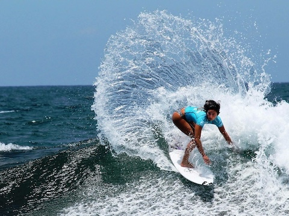

images
questions
Images taken in real life with lots of colors are good to use for jpeg.
Cartoons or graphics with less folors are good for GIF's
The PNG has a transparency option
To resize a photo you can change it in the photo preveiw after you dowload it. Do this before you add it to you webpage.
Resizing using a photo editing software before uploading it to the webpage takes less data and computing power for devices displaying the webpage in the future.